Space · Fall 2025 · Course project, team of 18
A CubeSat that can stop its own spin
A one-axis attitude determination and control system in a CubeSat-style bus, tested on a spinning testbed the class built.

- 0.95 kgassembled mass, under the 1 kg limit
- 2 of 6original top-level requirements met
- 29findings in a re-audit of the report, with fixes simulated
- 18students, one semester
SPACE 584 at the University of Michigan: an 18-student team built a self-contained spacecraft that senses its own rotation, slows itself with a reaction wheel and tries to photograph a model of Mars, plus the testbed it ran on. The control logic, the CAD and the sensor testing were my part.
01The brief
SPACE 584 normally flies a payload on a weather balloon, but a December launch is a poor idea, so this semester the class built a CubeSat for a lab instead. The job: spin the craft up on a rotating testbed, have it work out its own attitude from a star field, slow the spin and point itself, and then image a scaled model of Mars. Two teams merged into one in the first two weeks, about a quarter of the class dropped, and the original requirements were softened because they were too much for a semester: detumbling started at 1 rev/s instead of 10, for example.
02My part
I did the CAD modelling, the testing of the sensors and the control behind the spacecraft. The CAD covers the frame and the final stack of components, so mass, spacing and wiring could be checked before anything was cut. The control work is the state controller described below, and the sensor work was testing the attitude sensors and their algorithms. The sections that follow describe the project as the team reported it; the re-analysis at the end corrects it. The test spin was 1.7 rev/s, not 1; bearing friction alone met the detumble requirement; and the filter was over-confident.

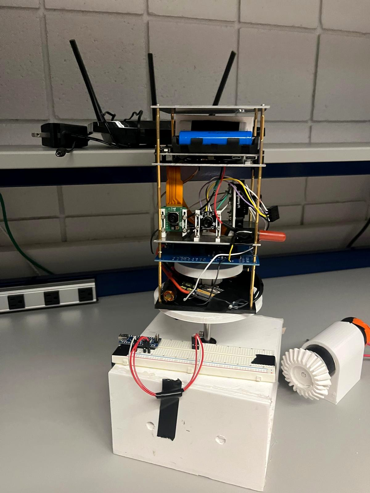

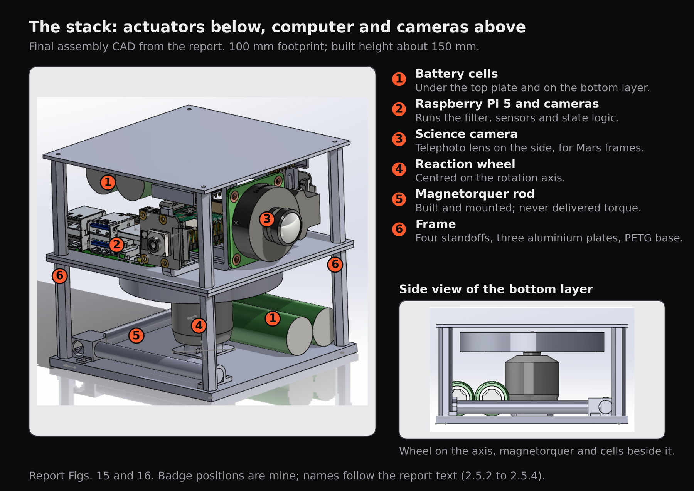

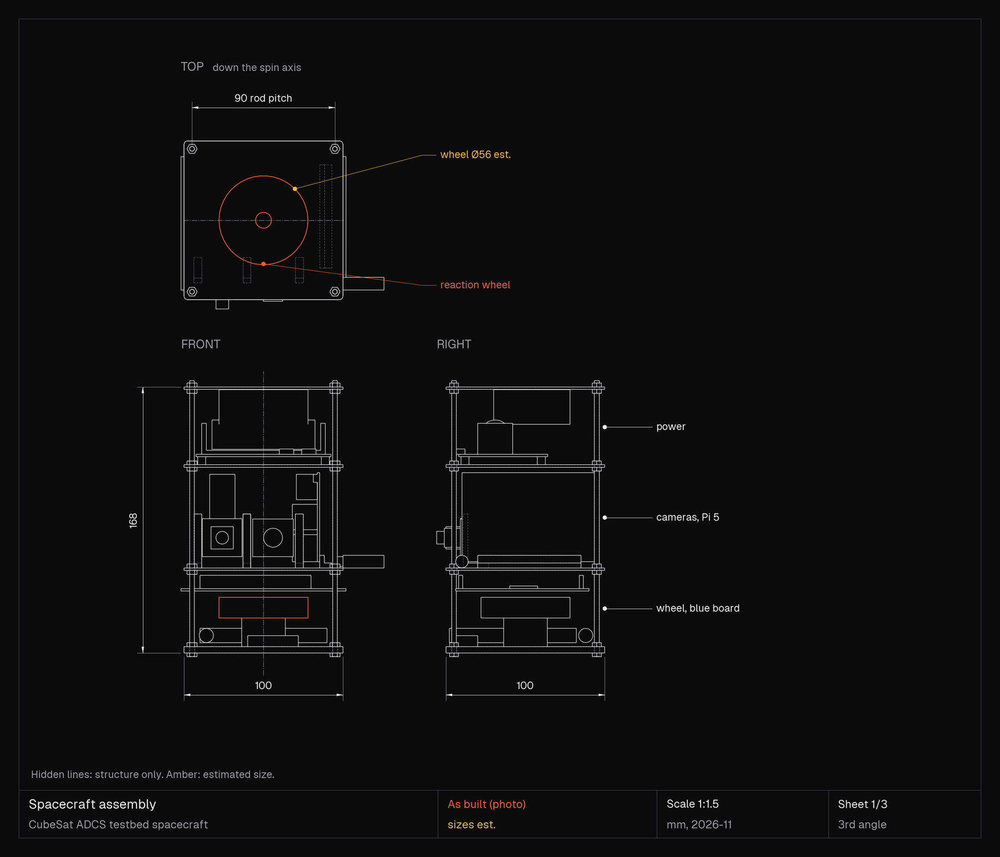

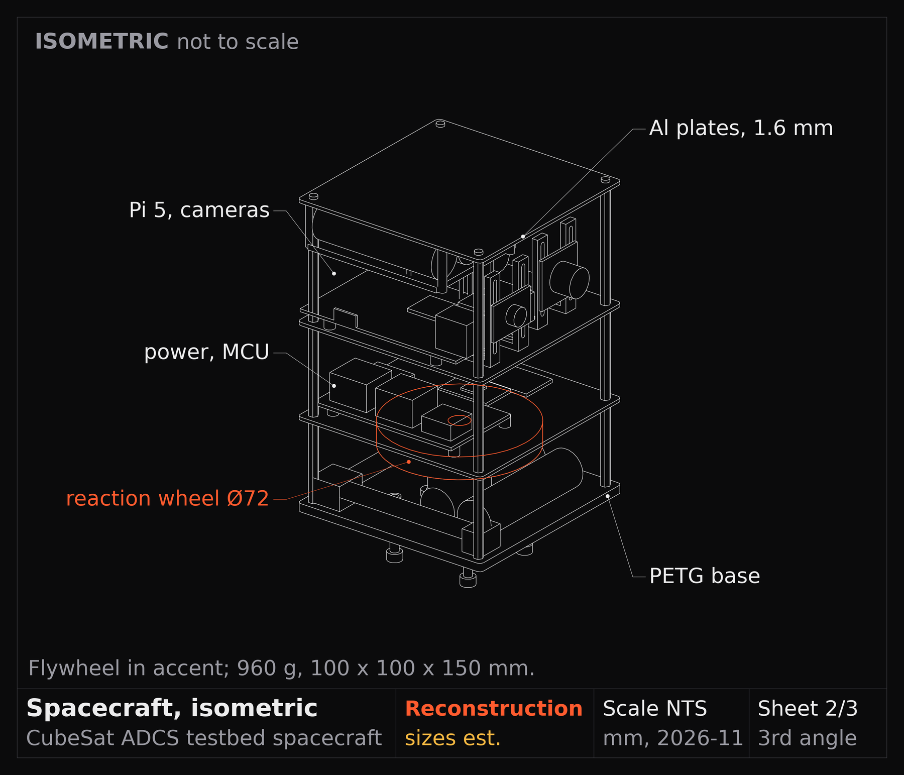

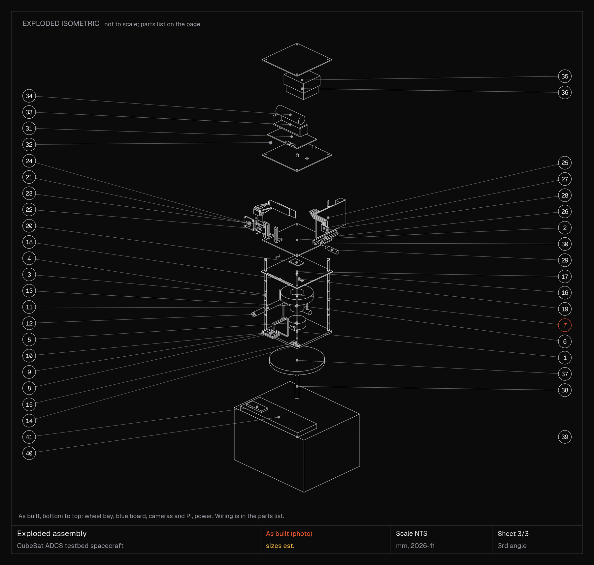
Parts list (29 items)
| No. | Part | Qty | Material | Note |
|---|---|---|---|---|
| 1 | Base plate, black printed, 100x100x4 | 1 | PETG (3D printed) | from source; Report 2.5.2 (100x100x4 PETG); black in the photo |
| 2 | Aluminium plate, 0.063 in thick | 3 | Aluminium 6061 (assumed) | size est.; Report 2.5.2.1 (0.063 in); heights read from the photo (est.) |
| 3 | Brass threaded rod M3, full height | 4 | Brass | size est.; Photo: one continuous brass rod per corner, base to top (replaces the per-bay standoffs of rev 0); diameter est. |
| 4 | M3 nuts clamping the plates (set of 8) | 4 | Steel | size est.; Photo shows plates clamped on the rods; nut count est. |
| 5 | Reaction-wheel motor (1000 KV drone class) | 1 | Drone brushless motor | size est.; Report 2.2.2 (1000 KV); 2212-class size est.; hidden under the wheel in the photo |
| 6 | Reaction wheel, white, about 56 dia x 13 | 1 | PETG or PLA (white, as seen) | size est.; Photo: white wheel about 55 mm across between the base and the blue board; size est. (rev 0 assumed a 72 mm Al disc) |
| 7 | Motor ESC, front edge (size est.) | 1 | PCB + FETs | size est.; Photo: black-labelled board with red leads at the front of the base |
| 8 | Magnetorquer rod (wound, 80 mm), along Y | 1 | Steel 1018 core, copper wire | size est.; Report 2.2.3 (6 x 80 mm rod, ~500 turns); photo shows a copper coil end at the front-left; second rod not visible |
| 9 | Magnetorquer rod (wound, 80 mm), along X | 1 | Steel 1018 core, copper wire | size est.; Report 2.2.3 (two rods, L layout); position at the back est. (not visible in the photo) |
| 10 | Blue interface PCB with headers (sensors, wiring) | 1 | FR4 + headers | size est.; Photo: blue board slightly wider than the plates, just below plate 1; function est. (IMU, motor and torquer wiring) |
| 11 | ICM-20948 IMU breakout, 25.7 x 17.7 (position est.) | 1 | PCB | size est.; Adafruit 4554 size; report says the IMU is in the stack, position on the blue board est. |
| 12 | Camera board, green, ~25 x 24 with M12-style lens (identity to confirm) | 1 | PCB + lens holder | size est.; Photo: green camera board at front-left; board size matches Pi Camera Module 3 (25 x 24), lens holder looks M12; est. |
| 13 | Camera board, black (Adafruit-style), with round lens (identity to confirm) | 1 | PCB + lens | size est.; Photo: black breakout with a star logo and a round lens at the front centre; report lists MLX90640 IR and a 104 deg star camera; est. |
| 14 | Camera L bracket, printed | 4 | PLA (white, printed) | size est.; Photo: white printed L brackets either side of each camera; size est. (report Fig. 23 slot bracket family) |
| 15 | Raspberry Pi 5 (85 x 56), standing on edge at +X | 1 | PCB + connectors | size est.; Photo: 'Raspberry Pi' silkscreen reads vertically at the right; Pi 5 85 x 56 (Raspberry Pi drawing); orientation from photo |
| 16 | Pi edge bracket (est.) | 1 | PLA (printed) | size est.; est.; how the Pi is held is not visible |
| 17 | Camera ribbon cable (orange FFC) | 1 | Polyimide | size est.; Photo: orange flat cable rising from the green camera toward the Pi |
| 18 | Red stub out of the +X side (antenna or connector cover; to confirm) | 1 | Rubber | size est.; Photo: red cylinder about 30 mm long sticking out at the right, just above plate 1; identity unknown |
| 19 | Battery / UPS board, 85 x 56, USB-C at the front | 1 | PCB + components | size est.; Photo: board on plate 2 with two USB-C ports on the front edge; size est. (Pi-HAT size) |
| 20 | Board spacer M2.5 | 4 | Nylon | size est.; est. |
| 21 | 18650 single-cell holder | 1 | ABS | size est.; Photo: black holder with a blue cell |
| 22 | Battery cell, 18650 (blue wrap) | 1 | Li-ion cell | size est.; Photo: one blue 18650 cell visible on the power board; report says three packs on the top layer |
| 23 | White sleeve / cradle under the top plate | 1 | Paper or PLA (white) | size est.; Photo: white wrap holding a black pack just under the top plate; size est. |
| 24 | Black battery pack (est.) | 1 | Li-ion pack | size est.; Photo: black block inside the white sleeve; identity and size est. |
| 25 | Rotating platform, white (testbed) | 1 | PLA or acrylic (white) | size est.; Photo: white disc under the base plate, about the plate width; diameter est. |
| 26 | Platform shaft (testbed) | 1 | Steel | size est.; Photo: steel shaft from the platform into the foam block |
| 27 | Foam base block (testbed) | 1 | Foam (white) | size est.; Photo: white foam block; size est. |
| 28 | Breadboard on the foam base (testbed) | 1 | ABS | size est.; Photo: full-size breadboard on the front of the foam block |
| 29 | Arduino Nano (testbed) | 1 | PCB | size est.; Photo: Nano on the breadboard driving the testbed |
03Sensing attitude
The craft estimates its angle two ways. A thermal camera looks for a heat pad set up as an artificial sun, and finds it as a cluster of two or three hot pixels. A wide-angle camera looks at a field of LED stars poked through black poster board and matches the pattern of distances between neighbouring stars to a pre-computed table, the way a real star tracker does. A gyroscope tracks the spin rate between the two, and an extended Kalman filter simulated with noisy sensors stayed within its error bounds. Staying inside bounds is not a consistency test, and the re-analysis below shows the filter was over-confident under realistic sensor noise. The sensors had their own troubles: one magnetometer part had wiring problems, a batch of IMUs turned out to have no working magnetometer at all, and the second of a redundant pair was damaged during integration, so the final craft flew on one sensor and did not use the magnetometers.

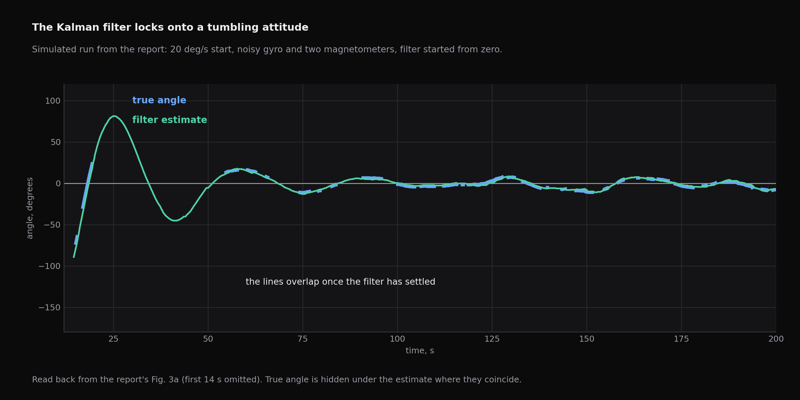

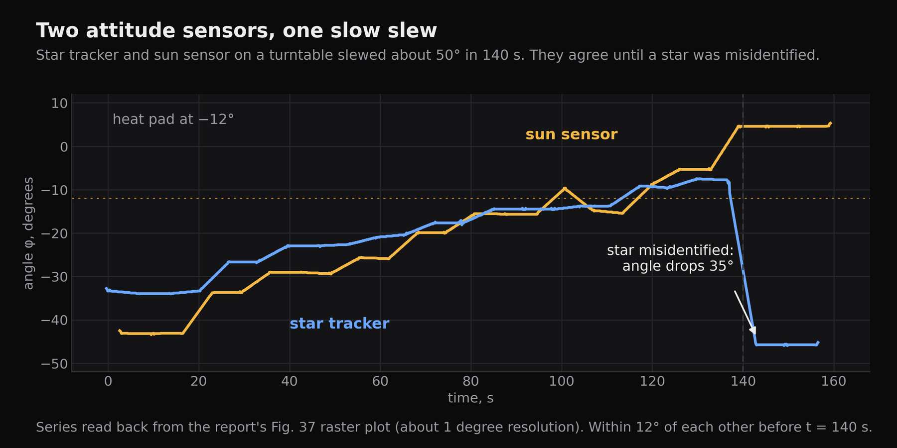

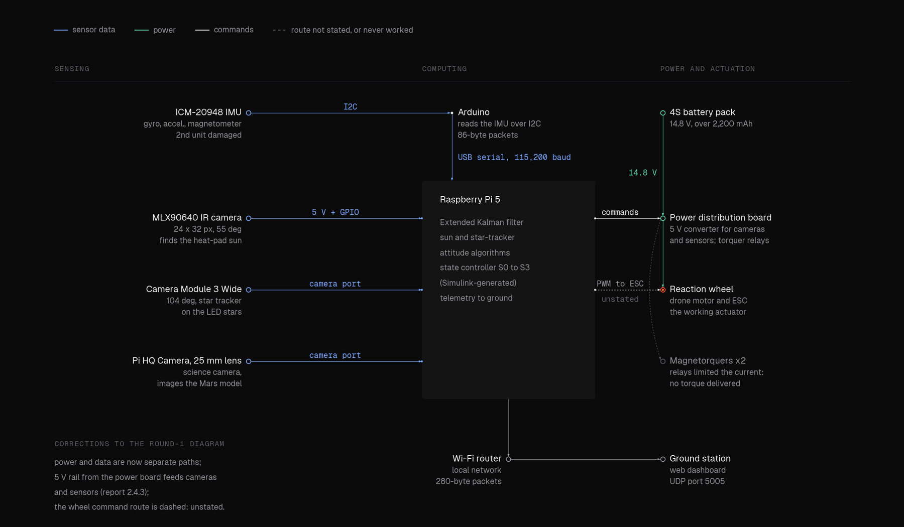
04The state controller
The controller moves through states. In S0 it starts with no knowledge of its attitude and feeds the gyroscope rate straight into the reaction wheel to cancel the spin. Once the spin is slow enough it moves to S1 and adds the sun sensor to get the star field in view, then to S2 and adds the star tracker to aim at the science target, and finally to S3 to image. If the spin gets too fast it falls back a state. A fifth state would dump the wheel's momentum with the magnetorquers, but that one was never built. In a Simulink simulation with noisy sensors the sequence ran as designed: about 45 seconds to detumble, a few seconds of coarse and fine pointing, then imaging. That simulation fed the controller a known attitude and a step actuator, so it does not show that the as-built hardware could do it; the re-analysis below tests that.

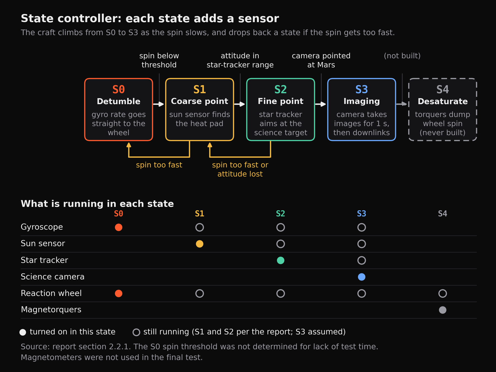

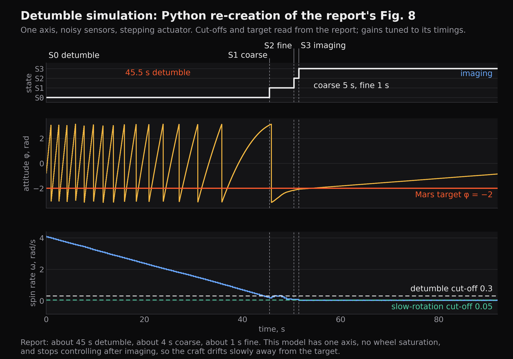
05What the test showed
In the final test the craft ran entirely on its battery, spun freely on the testbed at about 1.7 revolutions per second (the plan was 1), and stepped the reaction wheel through 0, 25, 50, 75 and 100% throttle for five seconds each. The spin slowed to zero and then reversed, peaking at 2.7 to 2.8 rad/s the other way (the report's text says 2.1). The gyroscope and the testbed's Hall sensor agreed once the spin fell inside the gyroscope's 500 deg/s range; for the first 11 seconds the gyroscope was saturated. Bearing friction alone would have stopped a 1 rev/s spin within the requirement, so the stop proves little; the reversal is what shows the wheel working. While it did this the science camera ran at 60 frames per second. The sharpest Mars image came at about 0.5 rad/s, and the faster the spin the more the image smeared, so the test also showed how hard imaging from a spinning craft is.

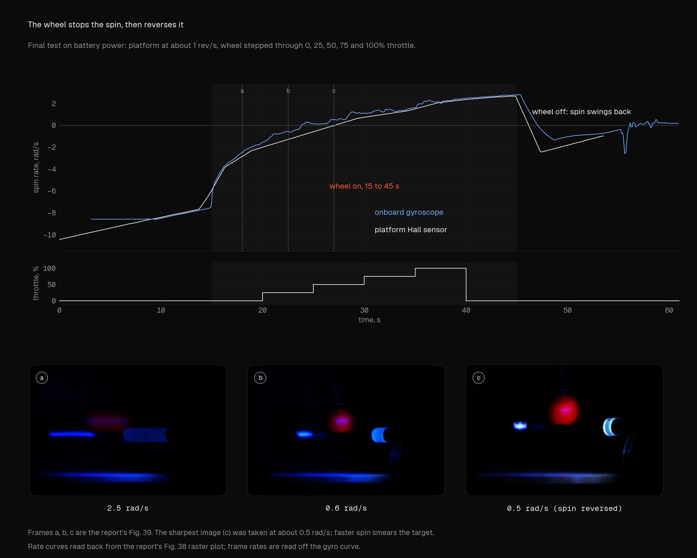

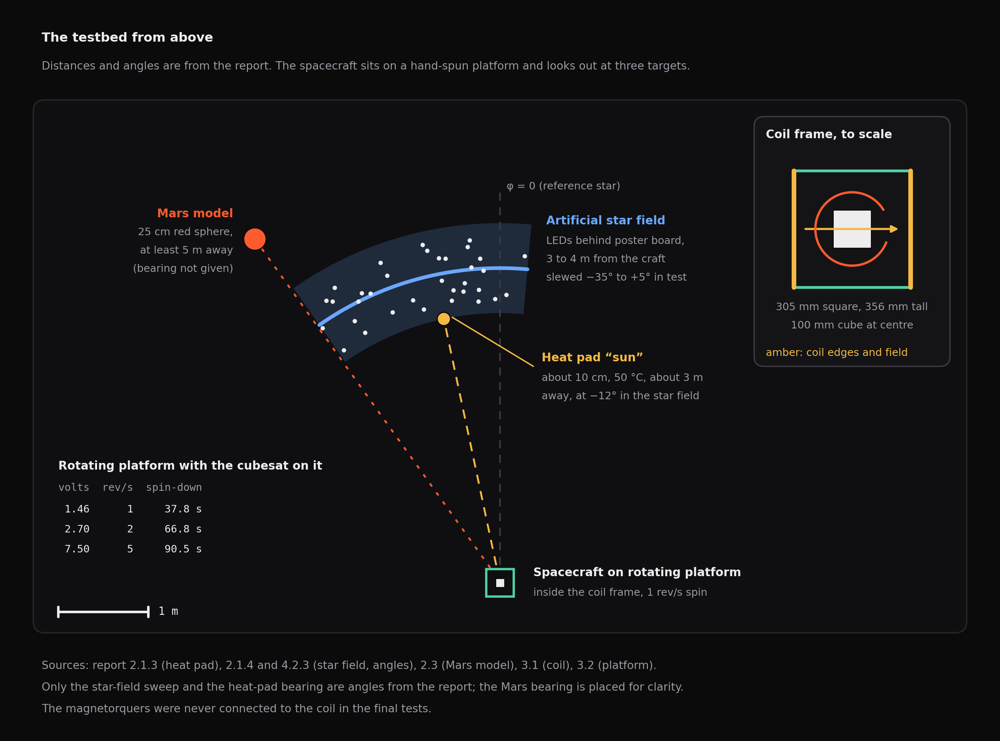
06Against the requirements
The honest result is mixed. The craft came in at 0.95 kg and cost about $3,000, but it stood 150 mm tall instead of fitting a 100 mm cube, ran for 30 seconds instead of 3 minutes, imaged its target for 3 seconds instead of 60, and first worked on 2 December, not 20 November. The camera itself resolved 0.7 mm at 5 m while still, better than the 1 mm goal, but its focus drifted once the craft moved. The magnetorquers were never driven on the spacecraft because the power board used relays that limited the current, and the lesson recorded was to use transistor switches instead. What did work, in one semester, was the full chain from sensing through the state logic to a wheel that stops and reverses a spinning craft.

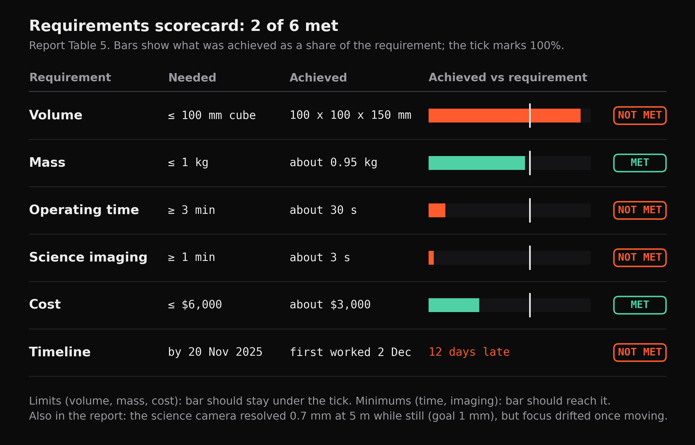

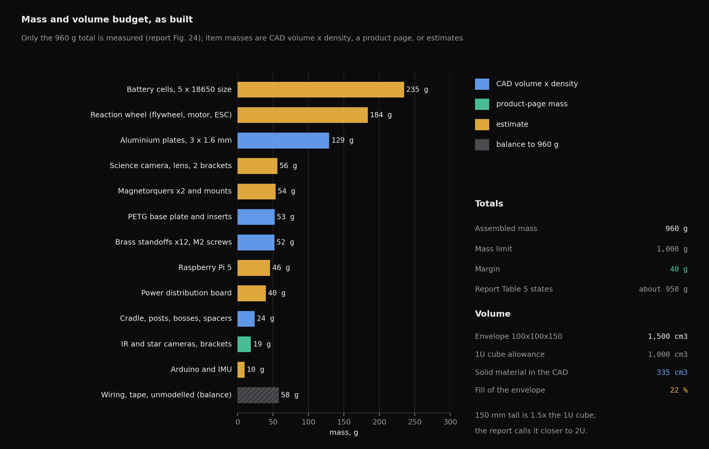
07Version 2: a re-analysis
Afterwards I re-audited the report and rebuilt the analysis with fixed-seed simulation and stated confidence intervals: 29 findings, 4 critical. Several change the story. The headline spin was about 1.7 rev/s, not 1, and the gyroscope was saturated at its 500 deg/s range. The wheel reversed the spin to 2.7 to 2.8 rad/s, not the 2.1 in the text. Requirement A (slowing from 1 rev/s) is met by bearing friction alone, so the test could not show the wheel working. The satellite's inertia in the report is off by about 2.6×, and the wheel-resolution conclusion is off by a factor of about 10 (a 12-bit fix would still be about 17× too coarse). The report's filter was badly over-confident under realistic noise (mean NEES 187 against an interval of 1.83 to 2.18), while a redesigned two-state filter is consistent (mean NIS 1.004). On the real star map the team's matcher picks a wrong star 4.9% of the time in simulation, and pose voting picks none in 800 trials.
In simulation, a mission succeeding within 60 s goes from 1% (95% interval 0 to 3%) for the report's state machine on the as-built hardware to 100% (98 to 100%) for a cascaded PID on a v2 design: 2U, 858 g estimated (987 g with a 15% margin), 17 requirements with verification rules and a 14-week plan. Most of that gain comes from the hardware: the as-built wheel's 13.7 RPM steps cannot reach the imaging rate limit with any controller. A time-optimal slew is 13% faster than the PID at 90°. I checked each idea against the literature and most already exist, so the supportable contribution is the identified-model and estimator-consistency study, not new algorithms. Two ideas were dropped because the numbers did not support them: designing the star field for uniqueness, and coordinated wheel and magnetorquer optimisation. Digitised curves have about 0.05 rad/s resolution, and mass, power and gyro drift are assumed and flagged in the paper. Figures here are from the paper, so they use its white background.

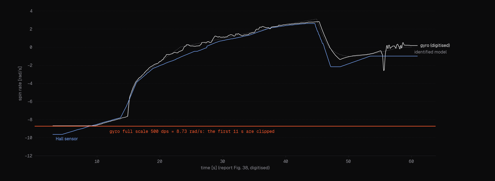

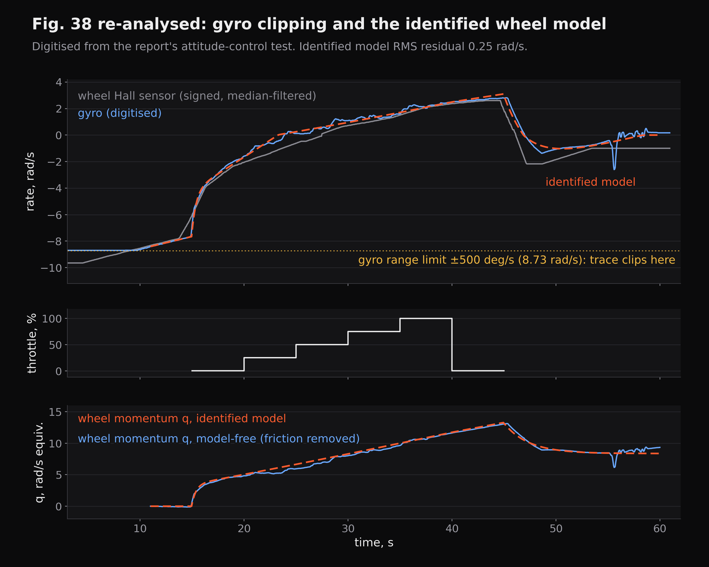

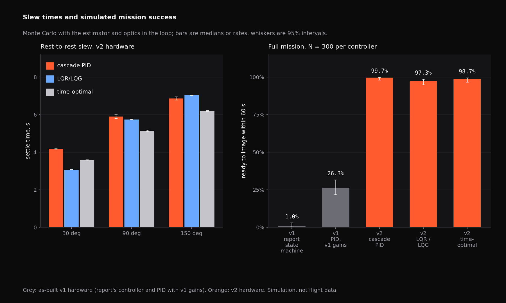

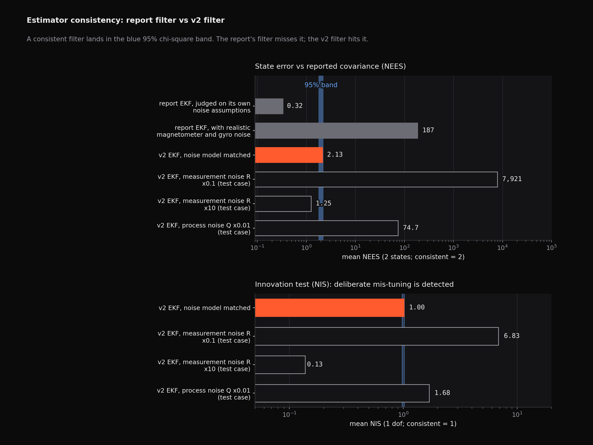

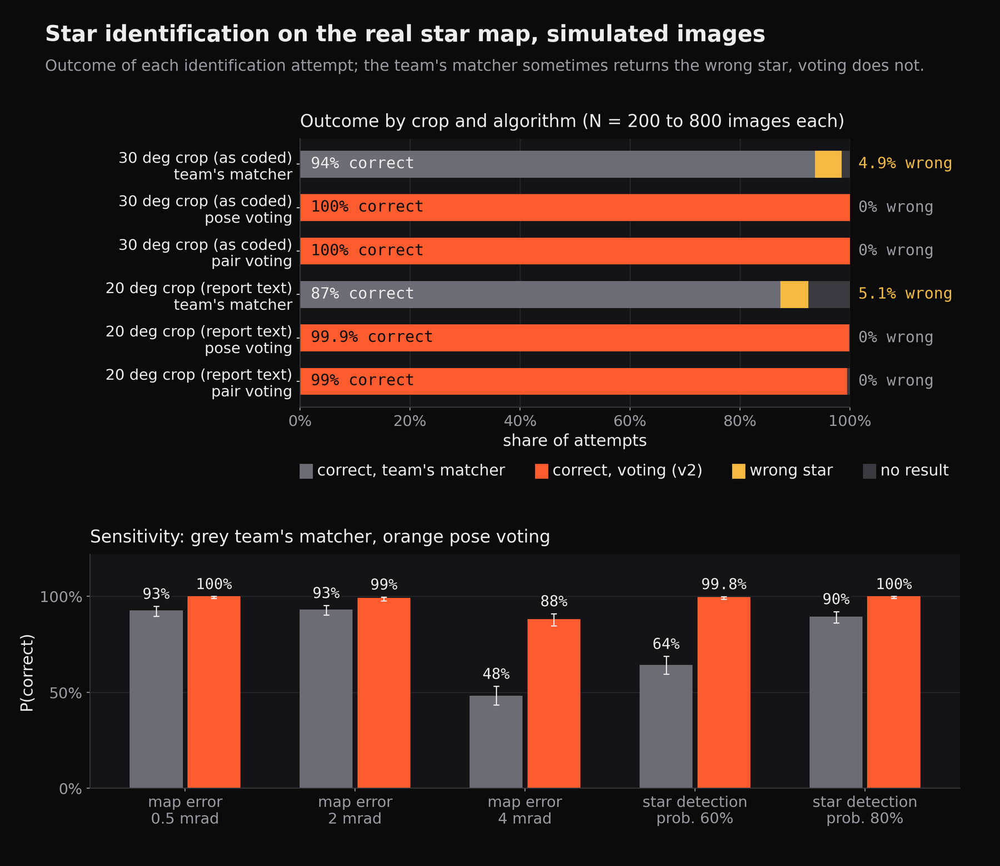

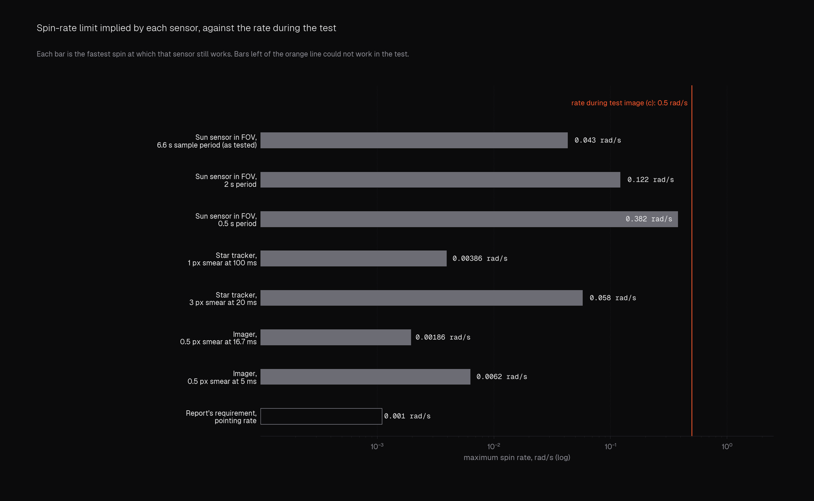

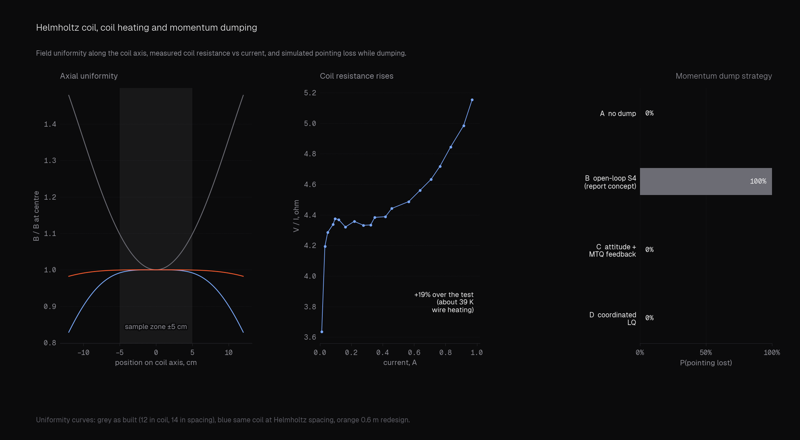

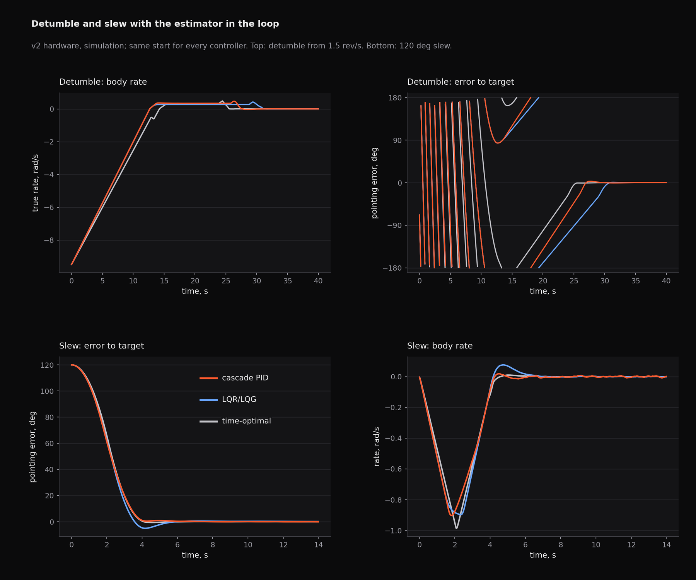
08Against current practice
To see where our testbed sits, I put its numbers next to published values for flown CubeSats, commercial ADCS units, star trackers and university test tables. The as-built agreement between the two optical sensors was 5.0° rms, the coarsest flight class. Passive magnetic stabilisation reaches 15 to 18°, magnetorquer-only control about 10°, wheel units 0.1 to 2°, and star-tracker units a fraction of an arcsecond to about 70 arcseconds. Our sun sensor sampled at 0.16 Hz with about 5° of error, against more than 10 Hz and under 0.5° for a 5 g commercial part. The bearing friction of 4.1×10⁻⁴ N m is 8 to 40 times that of a balanced university three-axis table, and only about 2.4 times below the torque of a 1 mN m wheel. The Helmholtz coil's field fell 63% over 39 mm, against 2 to 5% non-uniformity for published cages. The ±3.5° pointing requirement sits between the magnetorquer-only and wheel-based classes, so it is not competitive pointing.

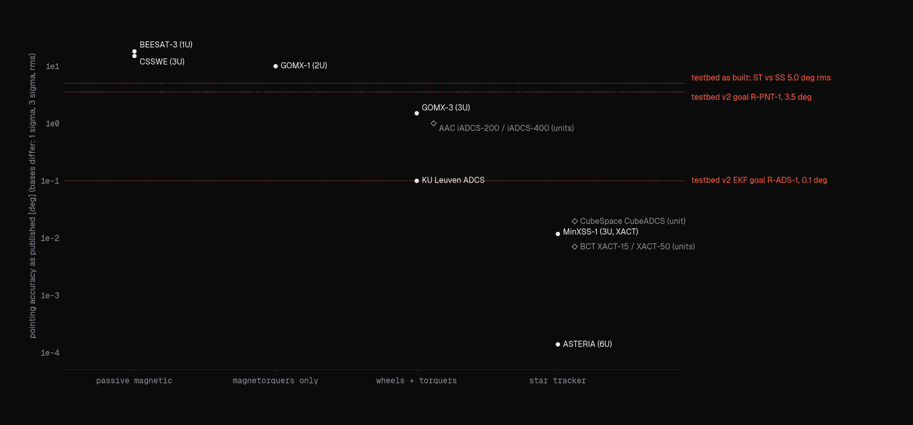

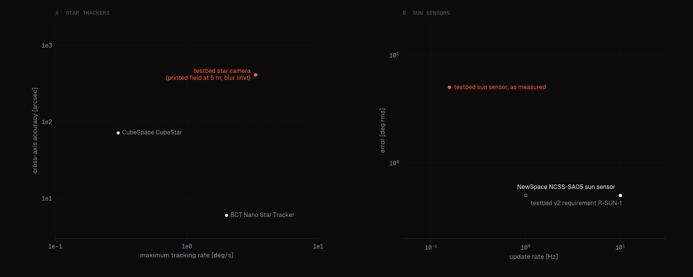

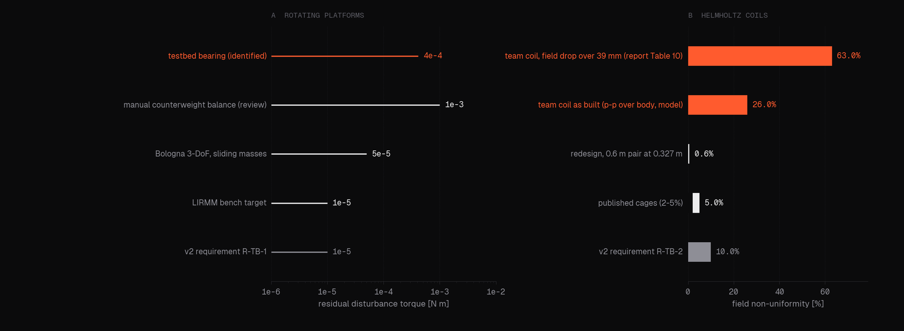
09From testbed to orbit
The last question was what a flight version would need. I sized the v2 2U for a 400 km orbit with SMAD's disturbance models. The worst-case torques, dominated by residual magnetic dipole, are 5.8×10⁻⁸ to 2.8×10⁻⁶ N m, which is 147 to 7,169 times below the testbed's friction. So the testbed over-tests torque, but it cannot show momentum building up: a 5.7 mN m s wheel saturates within one orbit, so momentum management is mandatory. Sizing the torquers to the orbit (dipole equals torque over field) gives 0.023 A m² nominal and 0.11 A m² at the high end, so the commercial 0.2 A m² class is enough. The report's 8.4 A m² requirement came from its 120 s dump target, not from the orbit, and I have withdrawn it. A three-axis B-dot simulation from a 10°/s deployer tip-off brings a 0.2 A m² torquer below 1°/s after a median 1.1 orbits. Bigger rods barely help, because the detumble is limited by the field geometry.
Power and data are the real limits. Body-mounted cells give 2.7 W orbit-average while tumbling and 3.3 W sun-pointed, against 2.4 W for fine pointing and 10.5 W for imaging. Imaging therefore closes only at about 10% duty, roughly 9 minutes per orbit, and the Raspberry Pi payload drives the budget, not the ADCS. A 1 W UHF link at 9.6 kbit/s to one mid-latitude station closes with 11.4 dB margin at 10° elevation and returns 1.5 MB per day. The full-rate ADCS log is 3.8 times that, and one 3 MB image fits about every 3.8 days. For a flight v2 I would buy a flight-proven ADCS unit, duty-cycle the payload, decimate the telemetry, add S-band if images matter, and fly an ISS-class orbit first. On the ground, the testbed should grow toward a three-axis FlatSat with friction below 5×10⁻⁵ N m and a 2 to 5% cage at orbital field strength. The drag numbers use a labelled exponential atmosphere, because I could not retrieve a cited density table.

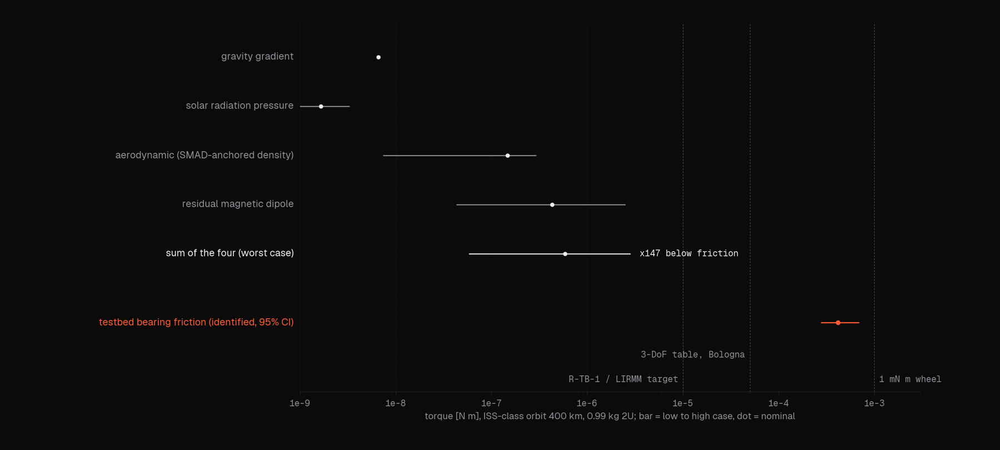

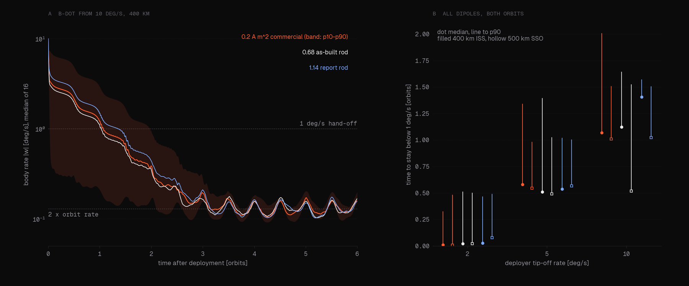

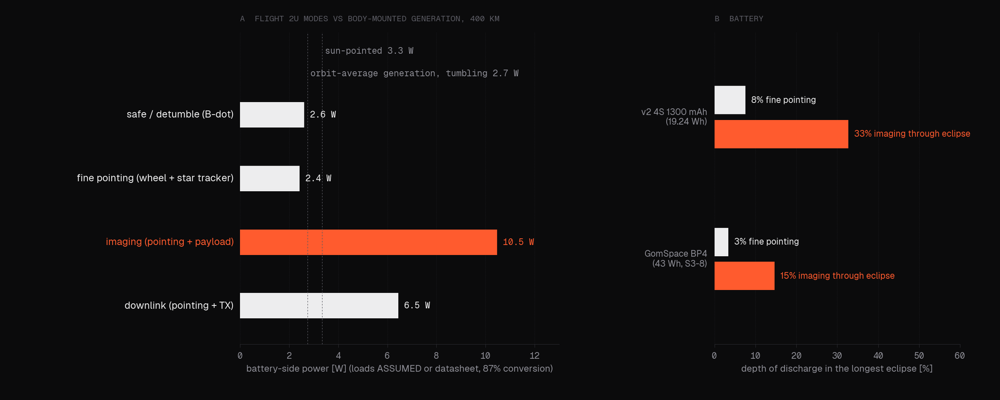

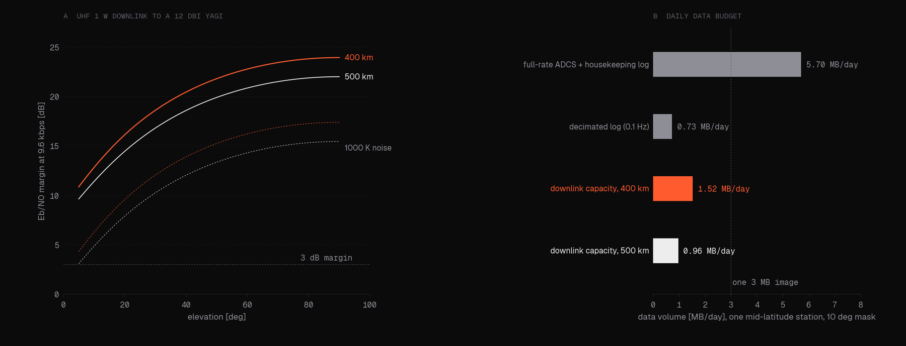

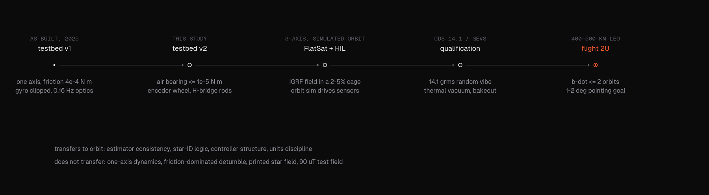